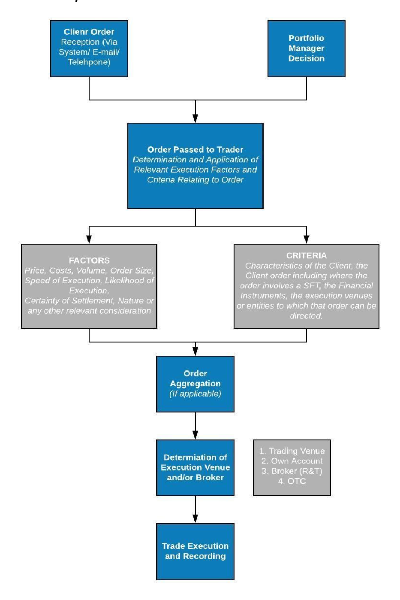

Introduction
Luna Wealth Asset Management Ltd (hereinafter “LWAM” or the “Company”), whose headquarters are at 4 Foti Pitta Street, 9th Floor Labs Tower, 1065 Nicosia, Cyprus, is a company incorporated and registered in the Republic of Cyprus under Cyprus Company Law and is authorized and regulated as a Cyprus Investment Firm (CIF) by the Cyprus Securities and Exchange Commission (hereinafter the “CySEC”), under License Number 379/19, in accordance with the Investment Services and Activities and Regulated Markets Law of 2017 (Law 87(I)/2017) (the “Law”), as amended from time to time, and subject to the European Parliament Markets in Financial Instrument Directive II (“MiFID II”).
Legal Scope
In accordance with Section 28 of the Investment Services and Activities and Regulated Markets
Law of 2017 (L.87(I)/2017), the Company takes all sufficient steps to obtain, when executing
orders, the best possible result for its clients (“best execution”), taking into account relevant
execution factors including price, costs, speed, likelihood of execution and settlement, size,
nature, and any other consideration relevant to the execution of the order. These obligations
apply both where the Company executes orders on behalf of clients and where it executes
transactions in the context of portfolio management services. The Company further ensures
that its execution arrangements and procedures are aligned, where applicable, with the
relevant provisions of Regulation (EU) 2023/1114 on Markets in Crypto-Assets (“MiCAR”), in
order to maintain consistent standards of client protection and regulatory compliance.
Objective
This Order Execution Policy (hereinafter the “Policy”) provides the procedures and methods
the Company applies to ensure the prompt, fair and expeditious execution of Client orders
with the best trade execution conditions for the Client, as per its regulatory obligations. Upon
acceptance of a Client order or when carrying out portfolio management services, the
Company will endeavor to execute any order in accordance with the following Policy, unless
otherwise instructed by the Client in respect to the order execution.
General
This Policy applies to all RETAIL and PROFESSIONAL clients (hereinafter the “Client”) for which
the Company executes transactions on their behalf in accordance with the
Company’s CySEC authorisation. A client’s classification will directly impact the determination
of whether a client is relying on Luna Wealth Asset Management Ltd to protect its interests,
and as such whether best execution is owed.
The Company does not undertake to provide best execution if a Client is classified as an ELIGIBLE COUNTERPARTY, as per MiFID II Art.30. Such Clients are anticipated to have full knowledge and understanding of MiFID II, the corresponding national legislation and the operations of the financial markets.
This Policy only applies in relation to Financial Instruments as defined in MiFID II. The Order Execution Policy forms part of the Company’s Terms and Conditions of Business.
Execution Factors
Best execution is the process by which a Financial Institution takes all sufficient steps to obtain the best possible result in the execution of client orders, taking into account various Execution Factors.
During this process, the Company takes into consideration the following Execution Factors:
- the price
- the cost
- the speed of execution
- the possibilities of execution and settlement
- the volume
- the nature, characteristics and the specificities of the order received
- any other factor that relates to the execution.
Execution Criteria
Each of the aforementioned factors shall not necessarily carry the same weight during the Company’s evaluation as to how to achieve the best possible result for the Client. . In determining the relative importance of the Execution Factors, the Company will take into consideration the following criteria:
- the characteristics of the Client (including the client classification);
- the characteristics of the order, including any specific instructions received;
- the characteristics of the financial instrument to which the order relates to;
- characteristics of the execution venue(s) to which the order can be directed.
The process by which the Company undertakes this assessment is neither uniform nor directly comparable in each instance. The Company’s execution obligations will be discharged in a manner that considers the different circumstances associated with the execution of the order as they relate to the financial instruments involved, namely (where applicable):
- For shares or depositary receipts admitted to a centralised trading venue, price and costs would be considered significant factors when routing to a particular venue.
- For other transaction types, increased emphasis may be placed on the sourcing of liquidity (Speed and likelihood of execution). This may be the case for Fixed Income trades or OTC transactions that involve a customised financial instrument bespoke to the clients.
- Emerging markets may also present lower volumes of liquidity and for practical necessity, emphasis will be placed on the speed and therefore likelihood of execution. Execution may not be at the best price available, but the certainty of execution for the whole order may increase.
- Similarly, where there is a large order that may exceed the available liquidity of the market (or where the likely impact on the market may be too great), execution of the order may occur in stages, to allow the Company to facilitate the execution appropriately.
- Where the client or Portfolio Manager submits and order with a specific instruction regarding an exchange traded derivative the Company will select the single venue and execution broker available based on that specific instruction and instrument
The Company will determine the relative importance of the execution factors by using the execution criteria described and its commercial judgement and experience. In case the client gives specific instructions to the Company, the order shall be executed in accordance with the instructions, if possible and not in violation of the regulatory framework.
Where there is more than one competing venue to execute an order for a financial instrument, in order to assess and compare the results, the Company would assess the execution of the order on each of the execution venues listed in the Company’s order execution policy which are capable of executing that order. The Company’s own commissions and the costs for executing the order on each of the eligible execution venues shall be taken into account in that assessment.
The Company undertakes not to structure or charge its commissions in such a way as to discriminate unfairly between execution venues. The Company will disclose any inducements and fees related to the use of execution venues, if applicable, to clients.
In the absence of any specific directions by the client, the Company shall direct the orders to the venue where it considers the best possible outcome in terms of total consideration shall be achieved.
Execution Venues
The Company may use the following types of Execution Venues:
- Regulated Markets (“RM”)
- Multilateral Trading Facilities (“MTF”)
- Organised Trading Facilities (“OTF”)
- Systematic Internalisers (“SI”)
- Third party investment firms
- Over the Counter (“OTC”) – outside of an Execution Venue.
The Company will select an execution venue based primarily on the availability of best pricing for a particular financial instrument and the amount of accessible liquidity offered by the execution venue. The Company primarily bases the decision on the choice of counterparty on the price offered for each requested financial instrument and the total consideration incurred for execution at each venue. Specifically, the execution fee, settlement fee, clearing fees and custody fees (if applicable). In addition, the cost of transmission of the funds from the client bank account they are held (if applicable) to the executing venue is taken into account. The speed of execution is considered as well, however the execution venues in question usually tend to have similar speed of execution. The liquidity of the venue is typically the next most important execution factor consideration.
As additional execution venue selection criteria, the Company will consider the overall technical and operational offering of a venue – including connectivity, speed of execution, reliability, rules, membership and clearing requirements, as well as the costs of accessing the venue. For certain instruments there may be only one execution venue available. When executing a trade in such circumstances the Company will assume that the selection of that venue satisfies the best execution factor which relates to venue selection.
The Company may select a single entity for execution if this allows it to obtain the best possible results for clients on a consistent basis and where Luna Wealth Asset Management Ltd can reasonably expect that the selected entity will enable the Company to obtain results for clients that are at least as good as the results that it reasonably could expect from using alternative entities for execution.
In the event that the Company has been appointed as an External Asset Manager on behalf of the Client, the selection of execution venue shall be based on the venues available to the Client through the institution (Credit or Investment Firm), where the client’s funds are held and on the basis of the order execution policy of the aforesaid institution.
Over the Counter
Luna Wealth Asset Management may execute transactions outside regulated markets or MTFs, within the framework of Over the Counter negotiations with Credit or other Financial institutions that have the right to enter into such transactions and for which the Company has cooperation agreements in place.
When executing orders or taking the decision to deal in OTC products, including bespoke products, MiFID II requires that the Company checks the fairness of the prices by gathering market data used in the estimation of the price of such product and, where possible by comparing with similar or comparable products.
In such occasions, no specific execution venue exists other than the Credit and Investment institutions with which the Company shall negotiate the transactions. The Company undertakes all necessary steps to ensure that the Executing Counterparty fulfills the Company’s best execution requirements for each distinct transaction. Nevertheless, the selection of the best Executing Counterparty is limited on the number of such Counterparties that are accessible and already have cooperation agreements with the Company. Therefore, it can be assumed that Clients’ transactions may not be performed in the best conditions available in the entire OTC market but in the best conditions available at the moment of negotiation amongst the Executing Counterparties negotiating with Luna Wealth Asset Management Ltd.
It is important to clarify that when trading OTC there is counterparty risk at play. Counterparty risk is the probability that the other party in a transaction may not fulfill its part of the deal and may default on the contractual obligations.
Client Order Handling
All Client orders will be executed promptly and expeditiously, being aggregated fairly (if applicable), and executed in due turn. Where comparable orders are received, they will be processed sequentially, unless a specific Client seeks to be treated otherwise, or in circumstances where orders have been received through different avenues. In every instance, the Company will ensure that Client’s orders take precedence over Company or personal orders and that the Client order will be handled equitably and to the Client’s best advantage.
Warehousing Where necessary, due to market conditions or where it is advantageous to the client, large orders may be executed over more than one day. The Company may allow for the delayed allocation of the order to avoid uneconomic allocations, mitigate high settlement costs or to optimise average pricing for the client.
Specific Instructions by the Client
In case the Client wishes that an order is executed in a different manner to the above procedures then the Client must clarify the manner in which the execution is to be carried out by the Company.
When a Client provides specific instructions in respect of the execution of the Client’s order, the Company, notwithstanding this Policy, shall execute the order in accordance with the Client’s specific instructions to the extent that this is possible.
To the extent that specific instructions relate only to one part of the Client order, the Company applies the Order Execution Policy for that part of the Client order which is not covered by the Client’s instructions, provided it is possible and in compliance with the Client’s instructions.
In the event that, due to any reason whatsoever, the execution of the Client’s order in accordance with his/her specific instructions is not possible, the Company shall promptly inform the Client of the impossibility of execution and shall request new instructions relating to the execution of the order.
In the case where the Policy is not applied as a result of a Client’s instructions, the Company considers that it has offered and fulfilled the obligations for best execution. The Client acknowledges that the Company’s compliance with his/her specific instructions may prohibit the Company from implementing measures it has established with the aim of attaining the best possible result for the Client’s interest.
In the event that Clients would like to issue specific instructions, they can do so through the Company’s Online Reporting System or by contacting the Client Administration Department. The Company reserves the right to refuse to execute a Client’s order. In such an event the Client will be informed accordingly by the Client Administration Department.
Client Administration Department
E-mail: accountmanagement@lunawealth.com Tel.: +357 22007111
Where Clients access a Direct Electronic Access platform to place orders, it is usual for the Client to select specific parameters of the trade, including price, quantity, venue, nature of the order. In this respect, the Client will be considered to have provided a specific instruction.
Client Order and Transaction Notification
Clients will be updated on the status of their orders (fully-executed, partly-executed, outstanding) by one of the following methods:
- the Client Administration Department,
- via the Company’s Online System,
- Company’s Online System e-mail feature or
- as per their instructions (i.e. by post) subject to the nature of the financial instruments to which the orders pertain.
Where the order is executed directly by the Company, the trade confirmation must arrive to the client within one working day from the order execution time.
Where the order is transmitted to a third party the trade confirmation must arrive to the client no later than the first business day following receipt of the confirmation from the party.
Information Requests
Upon the Client’s request, the Company is obliged to provide to the Client information concerning the execution of the Client’s orders and demonstrate compliance with this Policy. The Client’s request must be submitted to the Company in writing and should make specific reference to the order for which information is requested.
Whenever requested, Company employees have the duty, to present to Clients the available information regarding:
- An analysis of the reasoning used to select a particular execution venue;
- Data reconstituting the trade information available to the Company at the time.
Company employees have the duty to declare to Clients the sources (e.g. financial corporations, stock exchanges, news agencies, etc) of the information presented.
Client’s Portfolio
The Company shall provide Clients that are receiving the portfolio management investment service an updated statement of their portfolio/investments by granting access to the
Company’s Online System or on a quarterly basis via e-mail in lieu of Transaction Confirmations.
In addition, within 30 days of the end of each year, the Company will inform its clients in writing (through the use of regular or electronic mail - in accordance with the preferences of the client) with respect to the transactions over the said yearly period and the state of the portfolio at the end of the year.
The contents of the report shall be:
- The portfolio composition and valuation at the last day of the previous year, including any outstanding credit/debit balances in cash and securities as of that date.
- Complete statement of transactions effected on the client’s account over the year.
- Client account movements (transfers, purchases, disposals, etc) during the period.
Execution Policy and Execution of orders for Crypto-Assets
In accordance with Regulation (EU) 2023/1114 on Markets in Crypto-Assets (“MiCAR”), the Company has established a non-discriminatory commercial policy for the exchange of crypto-assets and implements procedures designed to achieve the best possible execution of client orders. Eligible clients are defined and assessed through a risk-based onboarding process conducted in full compliance with applicable AML/CFT and KYC requirements, and only verified clients who meet the Company’s internal risk and compliance criteria are permitted to transact in crypto-assets. The Company connects to selected crypto-asset trading venues, including Binance and Kraken, and operates an automated system that aggregates available quotes and dynamically selects the execution venue offering the most favorable execution conditions, taking into account factors such as market depth, spread, volume, volatility, and latency.
The Company does not receive any remuneration, discounts, or non-monetary benefits in exchange for routing client orders to any specific trading platform. Prices displayed to clients represent firm and executable quotes derived directly from execution venues, and an order is considered final upon the client’s explicit confirmation through the trading interface or platform. Execution of client orders may, where applicable, take place outside a trading platform, including on an over-the-counter basis, in which case the client’s prior express consent is obtained either on a transaction-by-transaction basis or under a general agreement. Clients are informed in a clear and transparent manner, both during onboarding and through ongoing policy disclosures, of price determination mechanisms, the possibility of off-platform execution, and all associated rights and conditions. The Company monitors and regularly reviews its crypto-asset execution arrangements and updates its execution venues and strategies as necessary to maintain effective execution outcomes.
Monitoring and Review
The Company will monitor on a regular basis, and at least annually, the effectiveness of this Policy and, in particular, the execution quality achieved via the procedures laid out in the Policy and, where appropriate, takes steps to correct any deficiencies.
In the event of a change that has a material impact upon the Company’s ability to obtain the best possible result for client orders, a review will be readily undertaken to assess the arrangements which the Company has in place to achieve best execution on a consistent basis and at least annually. What is material will depend on the nature and scope of any change. The most recent version of this Policy will always be available on the website www.lunawealth.com, and we will endeavour to notify Clients with whom we have an ongoing relationship of any material changes to our order execution arrangements or this Policy.
It should be noted that the Company will not notify Client separately of changes, other than substantial material changes to the Policy, and Clients should therefore refer from time to time to the website of the Company for the most up to date version of the Policy.
Appendix 1 – Summary of Order Execution and Transmission Process

The above diagram is intended as an indicative example of the execution process and factors LWAM will be likely to follow. This illustration will not bind LWAM in relation to any different process, methodology, factors or any other information we deploy in endeavouring to achieve best execution for our Clients.
Appendix 2 – Execution Venues per Financial Instrument Class
This Appendix provides a non-exhaustive list of Execution Venues and brokers on which the Company places significant reliance. The Company may also use other venues or brokers when it deems appropriate in accordance with this Policy. N.B. The order of venues does not reflect an order of priority/preference for execution.
| Financial Instrument | Execution Venues | ||
|---|---|---|---|
| Transferable Securities | 1. Market Securities (Dubai) Ltd 2. Queen Street Finance Ltd 3. Eurobank (Cyprus) Ltd 4.Piraeus Bank SA 5.Gesher Finance Ltd 6.Marex Group Plc and Marex Financial 7.EXT LTD | ||
| Transferable Securities – Structured Products | 1. EFG Asset Managers SAM 2. Bank Julius Baer & Co Ltd 3. Eurobank (Cyprus) Ltd 4. Market Securities (Dubai) Ltd 5.Marex Group Plc and Marex Financial 6.Piraeus Bank SA 7. Gesher Finance Ltd | ||
| Money Markey Instruments | 1. Market Securities (Dubai) Ltd 2. Queen Street Finance Ltd 3. Eurobank (Cyprus) Ltd 4. Piraeus Bank SA | ||
| Units in Collective Investment Undertakings | 1. Market Securities (Dubai) Ltd 2. Queen Street Finance Ltd 3. Eurobank (Cyprus) Ltd 4. Piraeus Bank SA | ||
| Options, futures, swaps, forward rate agreements and any other derivative contracts relating to securities, currencies, interest rates or yields, emission allowances or other derivatives instruments, financial indices or financial measures which may be settled physically or in cash | 1. Market Securities (Dubai) Ltd 2. Queen Street Finance Ltd 3.EXT LTD | ||